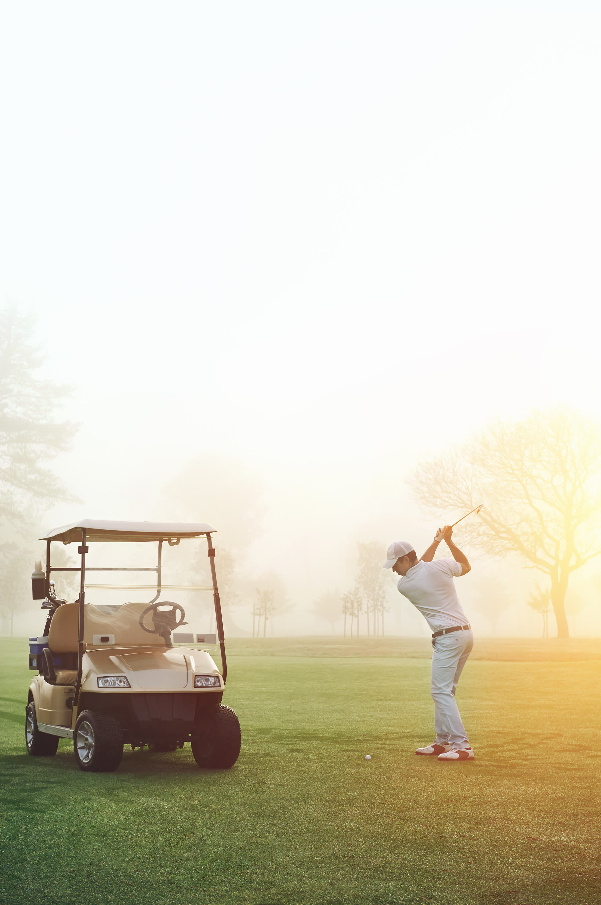

Session saved
Swing study · Down the line
The move that shapes
your ball flight.
Primary finding
Trail elbow depth
High confidence

01
TransitionElbow moves behind the shirt seam
Coach cue Keep the trail elbow in front as pressure shifts left.
TRANSITION / 02:18
01
What matters most
Your trail elbow gets behind your rib cage in transition.
That narrows delivery space, leaves the face open, and sends the path left. The result is the start-right fade you described.
Next session
3× pump drill
Three slow rehearsals, then one ball at 70% speed.